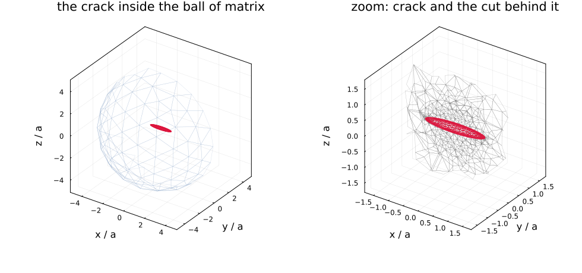
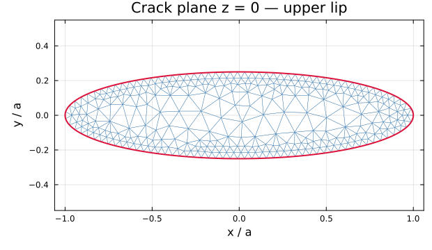
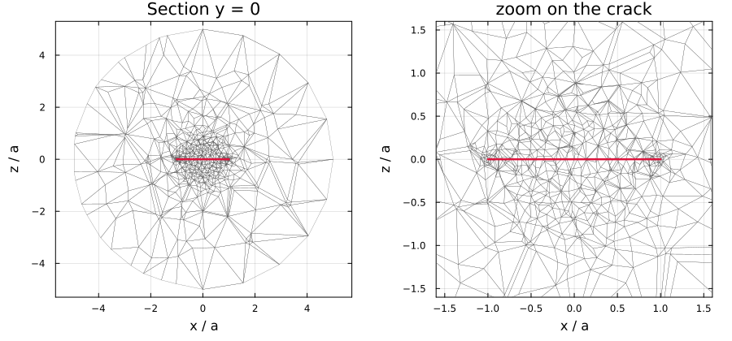

Finite-element inclusions
This page is about finite elements used inside MeanFieldHomogenization, to solve one inclusion's Eshelby problem. For MeanFieldHomogenization used inside a finite-element code, as a constitutive law at each Gauss point, see Finite-element coupling.
When a morphology has no closed-form Eshelby solution, its response can be computed numerically and fed to the schemes through the custom-inclusion contract. MeanFieldHomogenization ships one such inclusion: FEEllipticCrack, whose crack-opening-displacement tensor comes out of a Ferrite.jl solve.
using MeanFieldHomogenization
import Ferrite, FerriteGmsh, Gmsh # activates MeanFieldHomogenizationFerriteExtEither backend serves it — import Gridap, GridapGmsh and backend = GridapBackend() instead. With neither loaded the type still exists, but every solve raises an informative error.
Nothing here is computed at documentation-build time. The figures and the numbers are produced once by scripts/fe/make_doc_figures.jl and committed; the live demonstrations are scripts/81_fe_crack_eshelby.jl and scripts/82_fe_crack_schemes.jl.
The method
The finite-size bias, the dipole correction and the 3 + 3 fixed point this type runs are stated once in The finite Eshelby cell with a corrected boundary condition. What that buys, measured, is in Validating a finite-element crack.
The mesh
A ball of matrix around an elliptical slit, refined in a torus hugging the crack front — where the displacement field has its square-root singularity — and coarsening to $R/3$ on the outer boundary.

Left: the elliptical crack (red) suspended in the ball of matrix, whose far hemisphere is drawn in light blue — the crack is deliberately small, since $R = 5a$. Right: a zoom, with the $y = 0$ cut face behind the crack exposing how the tetrahedra grade from $h = b/12$ at the front out to the coarse far field.

The upper lip seen from $+z$, with the exact ellipse in red. Elements shrink towards the front.

Two details are worth stating, because both cost real debugging time in the SifAniso study this is ported from:
- the crack disc is
embeded in the ball, neverfragmented —fragmentwould cut the ball into two disjoint half-balls; - gmsh's
Crackplugin duplicates the nodes of the crack front as well as those of the lips, in spite ofOpenBoundaryPhysicalGroup(still true in gmsh 4.15). Left alone the crack is effectively half an element larger than requested and the opening is overestimated by 10–20 %. The front is therefore welded back together after import, which is also why the tetrahedra stay geometrically straight:setOrder(2)runs after the plugin and curves the two lips' front edges differently, pulling the welded front apart again at the mid-side nodes.
Straight tetrahedra with a P2 displacement field, then — subparametric, and capped at P2 because Ferrite provides no cubic Lagrange element on tetrahedra.
Using it
crack = FEEllipticCrack(1.0, 0.25; htipdiv = 12.0)
C₀ = iso_stiffness(0.8333, 0.3846) # E = 1, ν = 0.3
B_fe = cod_tensor(crack, C₀)
B_an = cod_tensor(EllipticCrack(1.0, 0.25), C₀) # closed form, for comparison
rve = RVE(:M)
add_matrix!(rve, Ellipsoid(1.0), Dict(:C => C₀))
add_phase!(rve, :cracks, crack, Dict(:C => C₀); density = 0.05,
symmetrize = IsoSymmetrize())
homogenize(rve, MoriTanaka(), :C)That is the point of the contract: only cod_tensor is implemented, and because the type subtypes AbstractCrack with a standard shape_trait, ℍ, ℕ, 𝐑, 𝐍K, the bundled pair and the four `delta*with their Budiansky4\pi/3` prefactor all follow. Orientation averaging is applied by the scheme afterwards.
Discretization
FEMeshOptions — passed as keywords to the constructor:
| Keyword | Default | Meaning |
|---|---|---|
radius_ratio | 5.0 | R/a. Five is enough because the boundary condition is corrected. |
htipdiv | 12.0 | element size at the crack front, b/htipdiv. |
order | 2 | displacement interpolation order (1 or 2). |
Diagnostics
fe_mesh_report(crack) # cells, dofs, welded front pairs, lip areas vs πab
fe_cod_breakdown(crack, C₀) # B_s, B_u, B_inf — bypasses the cache
fe_assembly_count(crack) # factorizations actually performed
fe_reset!(crack) # drop the mesh and the memoized tensorsCost and memoization
One evaluation is one assembly, one factorization and six solves. Results are memoized on the reference medium expressed in the crack's own frame, which has a useful consequence: a whole family of orientations of the same crack in the same isotropic matrix shares a single finite-element resolution.
One-shot schemes (Dilute, MoriTanaka, Maxwell, PonteCastanedaWillis) therefore cost exactly one solve — including under IsoSymmetrize over an orientation distribution. Iterative schemes (SelfConsistent, DifferentialScheme) change the reference medium at every step and pay one solve per distinct C₀: usable, but expensive (8 assemblies for a typical self-consistent run).
An iterative scheme re-evaluates the crack in the current estimate. For a family of parallel cracks that estimate is transversely isotropic, and the isotropic-only boundary correction refuses it — with an error saying so, rather than silently substituting an isotropic projection. Adding symmetrize = IsoSymmetrize() to the phase makes the scheme hand the kernel an isotropic reference at every iteration.
Isotropy is tested on the tensor's content, not its TensND type, so an iterate arriving as a TensCanonical with isotropic content is accepted.
Limitations
- Isotropic matrix only — the corrected boundary condition uses the closed-form Kelvin dipole. An anisotropic
C₀raises anArgumentError. - Elasticity only — the transport problem would need its own finite-element resolution.
- No automatic differentiation through the solve: the sparse factorization is
Float64-only. Use finite differences for sensitivities. - P2 maximum on tetrahedra (Ferrite provides no cubic Lagrange element there).
These, along with the general 6 + 6 scheme for solid inclusions (the excentered-core sphere of the 2017 paper) and Fourier axisymmetric elements, are tracked in docs/src/developer/roadmap.md.
Reproducing this page
julia scripts/fe/make_doc_figures.jl # figures + docs/src/assets/fe/results.md
julia scripts/81_fe_crack_eshelby.jl # the validation, live
julia scripts/82_fe_crack_schemes.jl # the crack inside the schemesSee also
- A recycled-concrete aggregate — the same correction on a solid inclusion, in its general polarization-fixed-point form, on a two-dimensional axisymmetric Fourier mesh.
- Custom inclusions — the contract this implements.
- Adding a new inclusion — the full developer contract.